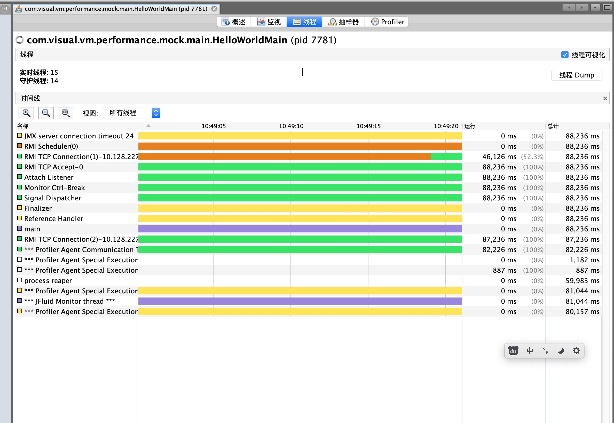
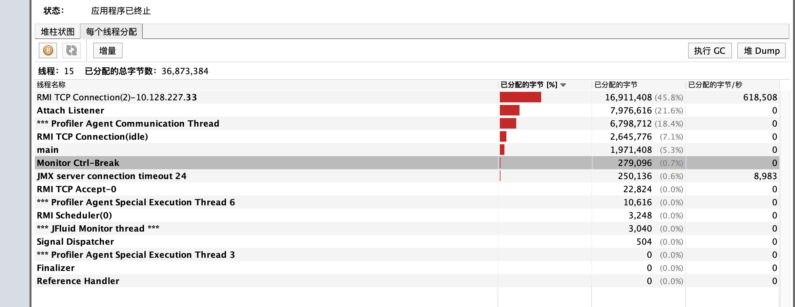
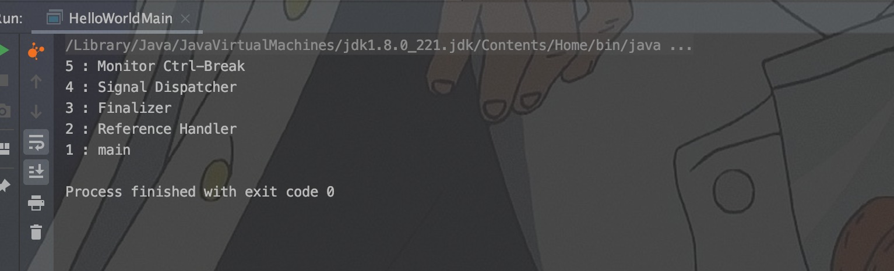
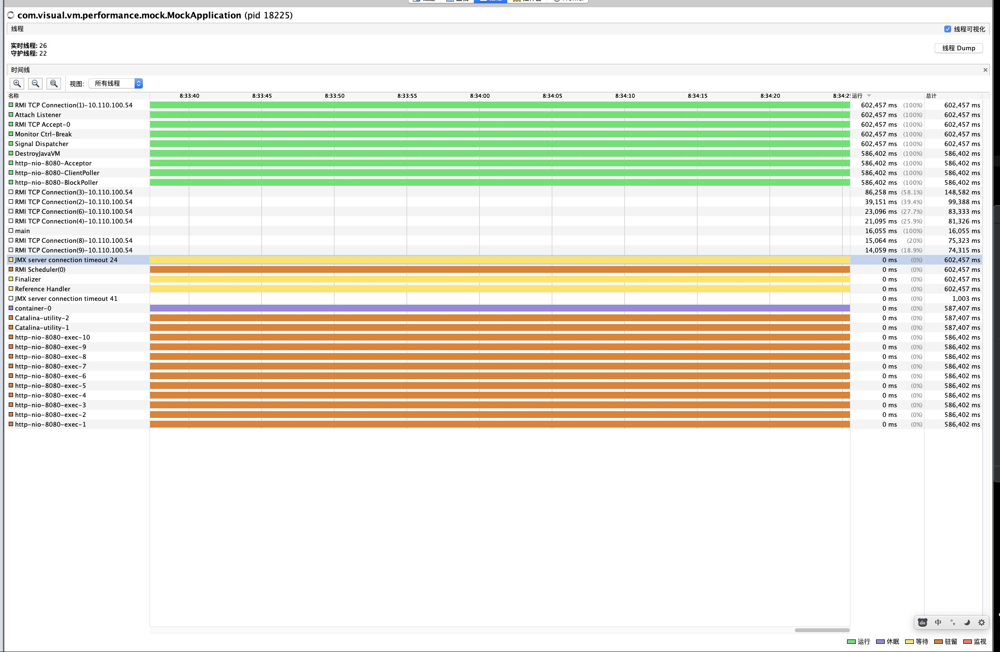
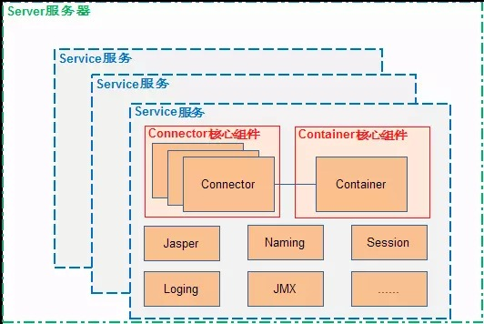
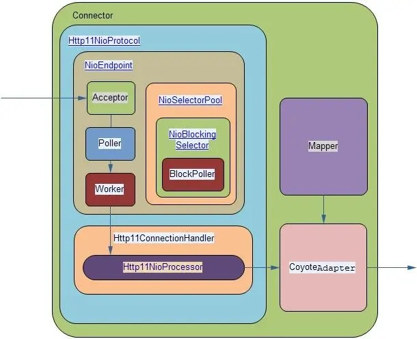
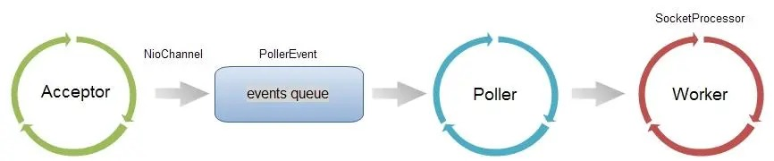

自从1995年第一个JDK版本JDKBeta发布，至今已经快25年，这些年来Java的框架日新月异，从最开始的Servlet阶段，到SSH，SSI，SSM，springboot等，还有一些其他方向的框架微服务SpringCloud、响应式编程Spring Reactor。零零总总 的框架，我们都需要去熟悉，那么怎么去快速熟悉呢，我觉得可以看源码，可以看博客，也可以根据内存分配去完善理解。
那么问题来了，一个Java项目在咱们平时启动项目的时候，究竟发生了什么，创建几个简单的项目，用VisualVM来分析一下~
简单的项目，应该没有比HelloWorld更简单的了吧，按照老规矩，咱们就从HelloWorld开始分析！那么简单的项目大家都能闭着眼睛敲出来，是不是没分析的必要啊，别着急，写好HelloWorld咱们开始分析：
System.out.println("HelloWorld start");
// 这里让线程睡一会，方便分析
Thread.sleep(100000);
System.out.println("HelloWorld end");运行main方法，打开VisualVM，发现事情并不简单哦，这个简单的项目有十六个线程维护，其中守护线程有十五个。

其中几大线程的内存分配情况如下：

这些线程都是干什么用的？写了那么多年HelloWorld没想到还有这种知识盲区：
RMI TCP Connection(2)-10.128.227.33
10.128.227.33是我本地的ip地址。正确而愚蠢的原因是因为开了VisualVM(JMX客户端)，JVM需要把他的数据传递给这个客户端，就是使用的TCP传递，相同作用的线程还有JMX server connection timeout：MAIN方法跑完了，JMX连接的心跳断开。RMI TCP Connection(idle)：用来在RMI连接池中创建线程。*** Profiler Agent Communication Thread：Profiler代理通信线程。RMI TCP Accept-0：进行JMX进行JMX监测。
Attach Listener
Attach Listener线程是负责接收到外部的命令，对该命令进行执行并把结果返回给发送者。通常我们会用一些命令去要求jvm给我们一些反馈信息，如：java -version、jmap、jstack等等。如果该线程在jvm启动的时候没有初始化，那么，则会在用户第一次执行jvm命令时，得到启动。
main
main线程，就是我们代码所写得代码对应线程
Monitor Ctr-Break
这应该是 IDEA 通过反射的方式，伴随你的程序一起启动的对你程序的监控线程。这也是一个默认全局线程
Signal Dispatcher
前面提到的Attach Listener线程职责是接收外部jvm命令，当命令接收成功后，就会交给signal dispather线程分发到各个不同的模块处理，并且返回处理结果。signal dispather线程是在第一次接收外部jvm命令时，才进行初始化工作。
Finalizer
这个线程是在main线程之后创建的，其优先级为10，主要用于在垃圾收集前，调用对象的finalize()方法；关于Finalizer线程的几点：
只有当开始一轮垃圾收集时，才会开始调用finalize()方法；因此并不是所有对象的finalize()方法都会被执行；
JVM为什么要单独用一个线程来执行finalize()方法呢？如果JVM的垃圾收集线程自己来做，很有可能由于在finalize()方法中误操作导致GC线程停止或不可控，这对GC线程来说是一种灾难，所以单独创建了一个守护线程。
Reference Handler
VM在创建main线程后就创建Reference Handler线程，其优先级最高，为10，它主要用于处理引用对象本身（软引用、弱引用、虚引用）的垃圾回收问题。
经过上面的分析可以看出来main本身程序的线程有：main线程，Reference Handler线程，Finalizer线程，Attach Listener线程，Signal Dispatcher线程。
java代码想要实现也很简单，如下即可：
// 获取java线程管理器MXBean，dumpAllThreads参数：
// lockedMonitors参数表示是否获取同步的monitor信息
// lockedSynchronizers表示是否获取同步的synchronizer
ThreadInfo[] threadInfos = ManagementFactory.getThreadMXBean().dumpAllThreads(true, false);
for (ThreadInfo threadInfo : threadInfos) {
System.out.println(threadInfo.getThreadId() + " : " + threadInfo.getThreadName());
}得到的打印结果为：

也就是说，写了那么多年的HelloWorld居然有五个线程来支撑，而我却一直被蒙在鼓里？？谁能随时去关注项目有多少个线程啊，VIsualVM可以= =，虽然我觉得他一直起线程进行通信很蠢，但是项目结构大了就有必要了。
那么一个啥都没有的springBoot项目启动了之后，会有哪些线程呢？先看看他的pom文件：
<?xml version="1.0" encoding="UTF-8"?>
<project xmlns="http://maven.apache.org/POM/4.0.0" xmlns:xsi="http://www.w3.org/2001/XMLSchema-instance"
xsi:schemaLocation="http://maven.apache.org/POM/4.0.0 https://maven.apache.org/xsd/maven-4.0.0.xsd">
<modelVersion>4.0.0</modelVersion>
<parent>
<groupId>org.springframework.boot</groupId>
<artifactId>spring-boot-starter-parent</artifactId>
<version>2.2.1.RELEASE</version>
<relativePath/> <!-- lookup parent from repository -->
</parent>
<groupId>com.visual.vm.performance</groupId>
<artifactId>mock</artifactId>
<version>0.0.1-SNAPSHOT</version>
<name>mock</name>
<properties>
<java.version>1.8</java.version>
</properties>
<dependencies>
<dependency>
<groupId>org.springframework.boot</groupId>
<artifactId>spring-boot-starter-web</artifactId>
</dependency>
</dependencies>
<build>
<plugins>
<plugin>
<groupId>org.springframework.boot</groupId>
<artifactId>spring-boot-maven-plugin</artifactId>
</plugin>
</plugins>
</build>
</project>只引入了spring-boot-starter-web的依赖，其他的什么都没有，启动着试一下。共有27个线程，守护线程有23个。

不同的颜色对应着不同的状态，详情看右下角。这些线程很多都是熟悉的，Main方法分析过的，通过VisualVM工具进行JMX监视(RMI TCP...)开了些线程；IDEA(Monitor Ctrl-Break)开了些线程；垃圾回收(Finalizer，Reference Handler)开了些线程。着重讲一下没见过的线程。
DestroyJavaVM
所有POJO应用程序都通过调用该main方法开始。正常情况下，main完成后，将告知JVM的DestroyJavaVM`线程来关闭JVM，该线程等待所有非守护进程线程完成后再进行工作。这是为了确保创建的所有非守护程序线程都可以在JVM拆除之前运行完毕。
但是，带有GUI的应用程序通常以多个线程运行。用于监视系统事件，例如键盘或鼠标事件。JVM仍然会创建DestroyJavaVM线程，且需要等待所有创建的线程完成，然后再拆除VM，然而应用并不会停止，所以DestoryJavaVM线程就会一直处于等待，直到应用运行完成。
任何创建线程并仅依赖其功能的应用程序都会有一个DestroyJavaVM线程，等待应用程序完成并关闭JVM。由于它等待所有其他线程执行完毕(join)，因此它不会消耗任何资源。
Http-nio-8080-Acceptor、Http-nio-8080-ClientPoller、Http-nio-8080-BlockPoller、http-nio-8080-exec-1...10
这些线程都有个特点，http-nio-8080开头。8080就是这个应用的端口，显然这是给容器使用的。项目引入的是spring-boot-starter-web依赖，也就是默认使用springBoot的内置tomcat容器启动，我们的maven下面也会有这样的几个包：tomcat-embed-core、tomcat-embed-el、tomcat-embed-websocket，我们所看到的线程都是由这几个包产生的。那么这些线程是干什么用的？
解决这个问题之前，先看一下tomcat的总体架构：

Tomcat由Connector和Container两个核心组件构成，Connector组件负责网络请求接入，目前支持BIO、NIO、APR三种模式，Tomcat5之后就支持了NIO，看我们的线程名也就是用的NIO；Container组件负责管理servlet容器。service服务将Container和Connector又包装了一层，使得外部可以直接获取。多个service服务运行在tomcat的Server服务器上，Server上有所有的service实例，并实现了LifeCycle接口来控制所有service的生命周期。
而NIO对应线程主要是实现在Connector组件中，他负责接受浏览器发过来的tcp请求，创建一个Reuqest和Response对象用来请求和响应，然后产生一个线程，将Request和Response分发给他们对应处理的线程。

终于看到了线程名中包含的Acceptor、Poller。他们都在Connector组件下的Http11NioProtocol下。着重介绍一下Http11NioProtocol下面的几个组件

Acceptor：接受socket线程，接受的方法比较传统：serverSocket.accept()，得到SocketChannel对象并封装到NioChannel对象中。然后NioChannel对象封装在PollerEvent对象中，并放到events queue中。使用队列(生产者-消费者)和Poller组件交互，Acceptor是生产者，Poller是消费者，通过events queue通信。
package org.apache.tomcat.util.net;
public class Acceptor<U> implements Runnable {
...
public void run() {
byte errorDelay = 0;
while(this.endpoint.isRunning()) {
....
try {
this.endpoint.countUpOrAwaitConnection();
if (!this.endpoint.isPaused()) {
Object socket = null;
try {
// 这句会调用NioEndPoint类，底层是serverSock.accept()
socket = this.endpoint.serverSocketAccept();
} catch (Exception var6) {
...
}
...
}
} catch (Throwable var7) {
...
}
}
this.state = Acceptor.AcceptorState.ENDED;
}
}Poller：NIO选择器Selector用于检查一个或多个NIO Channel(通道)的状态是否可读、可写。如此可以实现单线程管理多个channels也就是可以管理多个网络线程。Poller是NIO实现的主要线程，首先从events queue队列中消费得到PollerEvent对象，再将此对象中的Channel以OP_READ事件注册到主Selector中，Selector执行select操作，遍历出可以读数据的socket，并从Worker线程池中拿到可用的Workrer线程，将可用的socket传递给Worker线程。
package org.apache.tomcat.util.net;
public class Poller implements Runnable {
...
public void run() {
while(true) {
boolean hasEvents = false;
label59: {
try {
if (!this.close) {
hasEvents = this.events();
if (this.wakeupCounter.getAndSet(-1L) > 0L) {
this.keyCount = this.selector.selectNow();
} else {
// selector.select方法，接受acceptor的socket
this.keyCount = this.selector.select(NioEndpoint.this.selectorTimeout);
}
this.wakeupCounter.set(0L);
}
if (!this.close) {
break label59;
}
this.events();
this.timeout(0, false);
try {
this.selector.close();
} catch (IOException var5) {
NioEndpoint.log.error(AbstractEndpoint.sm.getString("endpoint.nio.selectorCloseFail"), var5);
}
} catch (Throwable var6) {
ExceptionUtils.handleThrowable(var6);
NioEndpoint.log.error(AbstractEndpoint.sm.getString("endpoint.nio.selectorLoopError"), var6);
continue;
}
NioEndpoint.this.getStopLatch().countDown();
return;
}
if (this.keyCount == 0) {
hasEvents |= this.events();
}
Iterator iterator = this.keyCount > 0 ? this.selector.selectedKeys().iterator() : null;
while(iterator != null && iterator.hasNext()) {
SelectionKey sk = (SelectionKey)iterator.next();
NioEndpoint.NioSocketWrapper socketWrapper = (NioEndpoint.NioSocketWrapper)sk.attachment();
if (socketWrapper == null) {
iterator.remove();
} else {
iterator.remove();
// 然后调用processKey方法，将socket传给worker线程进行处理
this.processKey(sk, socketWrapper);
}
}
this.timeout(this.keyCount, hasEvents);
}
}
}Worker：Worker线程从Poller传过来的socket后，将socket封装在SocketProcessor对象中，然后从Http11ConnectionHandler获取Http11NioProcessor对象，从Http11NioProcessor中调用CoyoteAdapter的逻辑(这就出了Http11NioProtocol组件，可以看上上图)。在Worker线程中，会完成从socket中读取http request，解析成HttpervletRequest对象，分派到相应的servlet并完成逻辑，然而将response通过socket发回client。
package org.apache.tomcat.util.net;
protected class SocketProcessor extends SocketProcessorBase<NioChannel> {
public SocketProcessor(SocketWrapperBase<NioChannel> socketWrapper, SocketEvent event) {
super(socketWrapper, event);
}
protected void doRun() {
// 这一句从Poller拿到socket，然后进行tomcat主线程处理流程
NioChannel socket = (NioChannel)this.socketWrapper.getSocket();
SelectionKey key = socket.getIOChannel().keyFor(socket.getSocketWrapper().getPoller().getSelector());
NioEndpoint.Poller poller = NioEndpoint.this.poller;
if (poller == null) {
this.socketWrapper.close();
} else {
try {
int handshake = -1;
try {
if (key != null) {
if (socket.isHandshakeComplete()) {
handshake = 0;
} else if (this.event != SocketEvent.STOP && this.event != SocketEvent.DISCONNECT && this.event != SocketEvent.ERROR) {
handshake = socket.handshake(key.isReadable(), key.isWritable());
this.event = SocketEvent.OPEN_READ;
} else {
handshake = -1;
}
}
} catch (IOException var13) {
handshake = -1;
if (NioEndpoint.log.isDebugEnabled()) {
NioEndpoint.log.debug("Error during SSL handshake", var13);
}
} catch (CancelledKeyException var14) {
handshake = -1;
}
if (handshake == 0) {
SocketState state = SocketState.OPEN;
if (this.event == null) {
state = NioEndpoint.this.getHandler().process(this.socketWrapper, SocketEvent.OPEN_READ);
} else {
state = NioEndpoint.this.getHandler().process(this.socketWrapper, this.event);
}
if (state == SocketState.CLOSED) {
poller.cancelledKey(key, this.socketWrapper);
}
} else if (handshake == -1) {
NioEndpoint.this.getHandler().process(this.socketWrapper, SocketEvent.CONNECT_FAIL);
poller.cancelledKey(key, this.socketWrapper);
} else if (handshake == 1) {
this.socketWrapper.registerReadInterest();
} else if (handshake == 4) {
this.socketWrapper.registerWriteInterest();
}
} catch (CancelledKeyException var15) {
...
} finally {
...
}
}
}
}NioSelectorPool：NioEndPoint对象维护了一个NioSelectorPool对象，这个NioSelectorPool中又维护了一个BlockPoller线程(基于Selector进行NIO逻辑)。